<h1>Abgeleitete Textformate</h1> <br/> <hr/> <br/> <p>Christof Schöch</p> <br/> <p><strong><emph>Digital Humanities and the Law</emph></strong></p> <p><strong>Universität Trier | 22. Juni 2020</strong></p> <br/> <hr/> <br/> <img height="55" data-src="img/basics/uni-trier.png"> -- ## Überblick 1. [Textanalyse jenseits des Urheberrechts](#/2) 2. [Abgeleitete Textformate: Vorbilder](#/3) 3. [Abgeleitete Textformate: Prinzip](#/4) 3. [Abgeleitete Textformate: Beispiele](#/4) 4. [Fazit](#/6) -- ## (1) Textanalyse jenseits des Urheberrechts --- #### Ausgangslage * Urheberrecht verbietet Verfielfältigung geschützter Texte <!-- .element: class="fragment" data-fragment-index="1" --> * TDM-Schranke (§60d UrhG) erlaubt manches, aber mit Bedingungen und Grenzen <!-- .element: class="fragment" data-fragment-index="2" --> --- #### Die TDM-Schranke * erlaubt ist: <!-- .element: class="fragment" data-fragment-index="1" --> * das Erstellen von Korpora aus Werken jedweder Art für das TDM <!-- .element: class="fragment" data-fragment-index="2" --> * einschließlich aller für Korpusbildung und das anschließende TDM erforderlichen Bearbeitungs- und Vervielfältigungshandlungen <!-- .element: class="fragment" data-fragment-index="3" --> * einschließlich Normalisieren, Strukturieren, Kategorisieren, Annotieren <!-- .element: class="fragment" data-fragment-index="4" --> * unter folgenden Voraussetzungen: <!-- .element: class="fragment" data-fragment-index="5" --> * man verfolgt nichtkommerzielle wissenschaftlicher Forschung <!-- .element: class="fragment" data-fragment-index="6" --> * man hat rechtmäßigen Zugang zum Ursprungsmaterial <!-- .element: class="fragment" data-fragment-index="7" --> --- #### Einschränkungen der TDM-Schranke * rechtmäßiger Zugang zu Materialien wird vorausgesetzt, nicht automatisch gewährt <!-- .element: class="fragment" data-fragment-index="1" --> * kein Recht auf Umgehung etwaiger technischer Schutzmaßnahmen <!-- .element: class="fragment" data-fragment-index="2" --> * Korpus muss nach Ende des Projekts an eine Bibliothek abgegeben werden <!-- .element: class="fragment" data-fragment-index="3" --> * Korpus kann nur für Qualitätsprüfung zugänglich gemacht werden, nicht für Anschlussforschung <!-- .element: class="fragment" data-fragment-index="4" --> * Änderungsverbot, Vergütungspflicht und Pflicht zu Quellenangaben sind zu beachten <!-- .element: class="fragment" data-fragment-index="5" --> --- #### Vier Lösungsansätze 1. Zugang zu lizenzierten Inhalten über eine API; <!-- .element: class="fragment" data-fragment-index="1" --> 1. Nutzung von Analyseplattformen; <!-- .element: class="fragment" data-fragment-index="2" --> 1. die Forschung im "closed room" <!-- .element: class="fragment" data-fragment-index="3" --> 1. Arbeit mit abgeleiteten Textformaten <!-- .element: class="fragment" data-fragment-index="4" --> -- ## (2) Abgeleitete Textformate: Vorbilder --- #### CrossAsia N-Gram Service 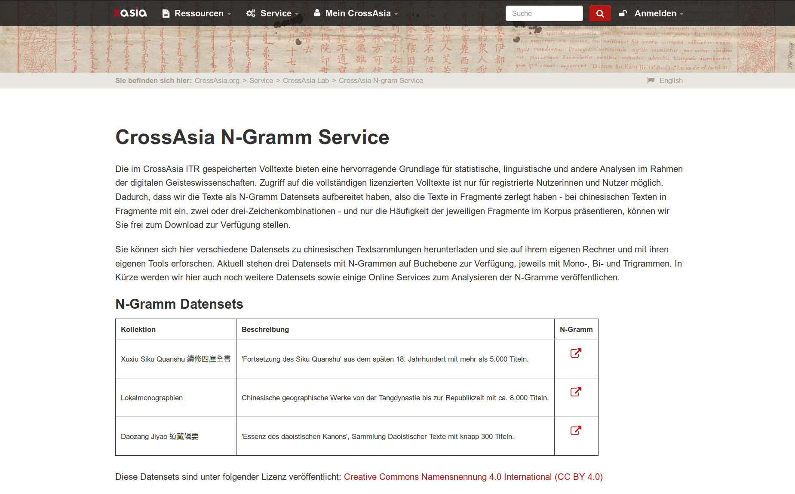 * 13.000 Texte * https://crossasia.org/service/crossasia-lab/crossasia-n-gram-service/ --- #### CrossAsia N-Gram Service <a href="img/cangs-txt.png">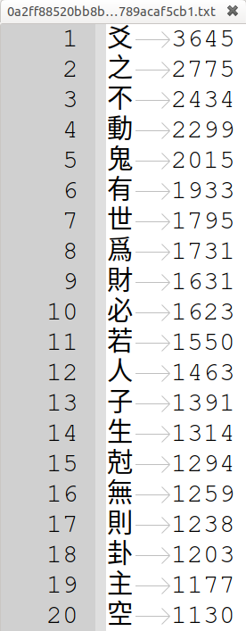</a> --- #### Stylo for R Datasets 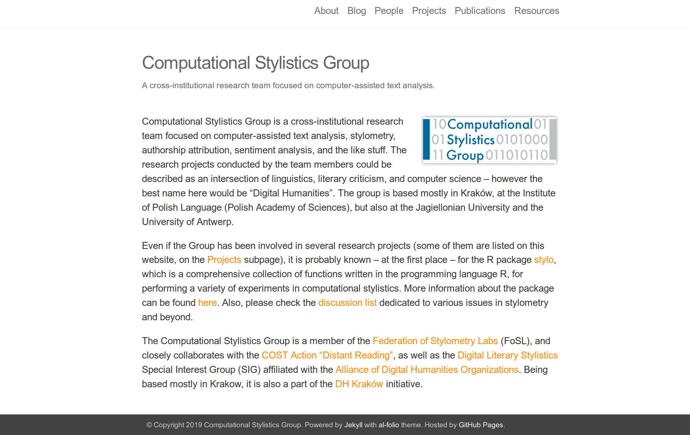 * mehrere Dutzend Texte * https://github.com/computationalstylistics/stylo/tree/master/data --- #### Stylo for R Datasets <a href="img/lee-tdm.png">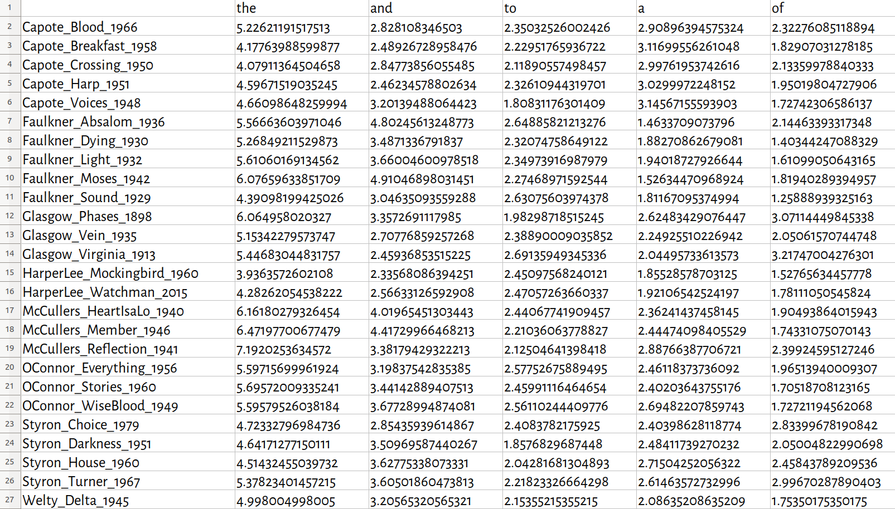</a> --- #### HathiTrust Extracted Features Dataset <a href="img/htrc.png">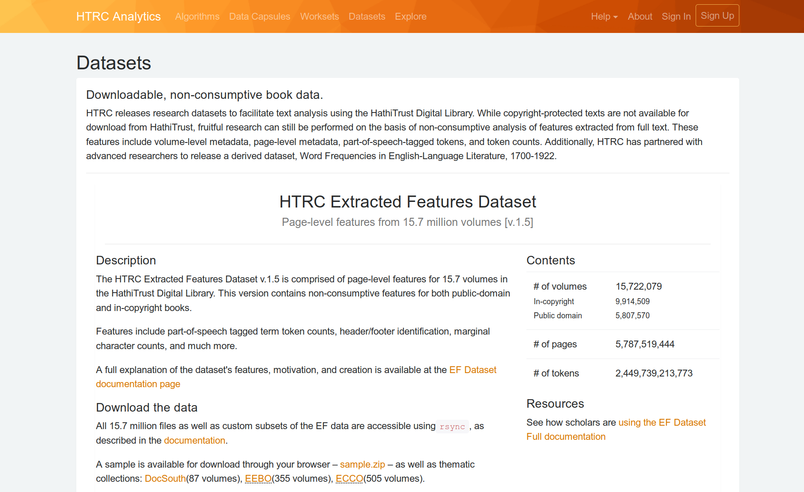</a> * 15.7 Millionen Bände (!) * https://analytics.hathitrust.org/datasets --- #### HathiTrust Extracted Features Dataset <a href="img/htrc2.png">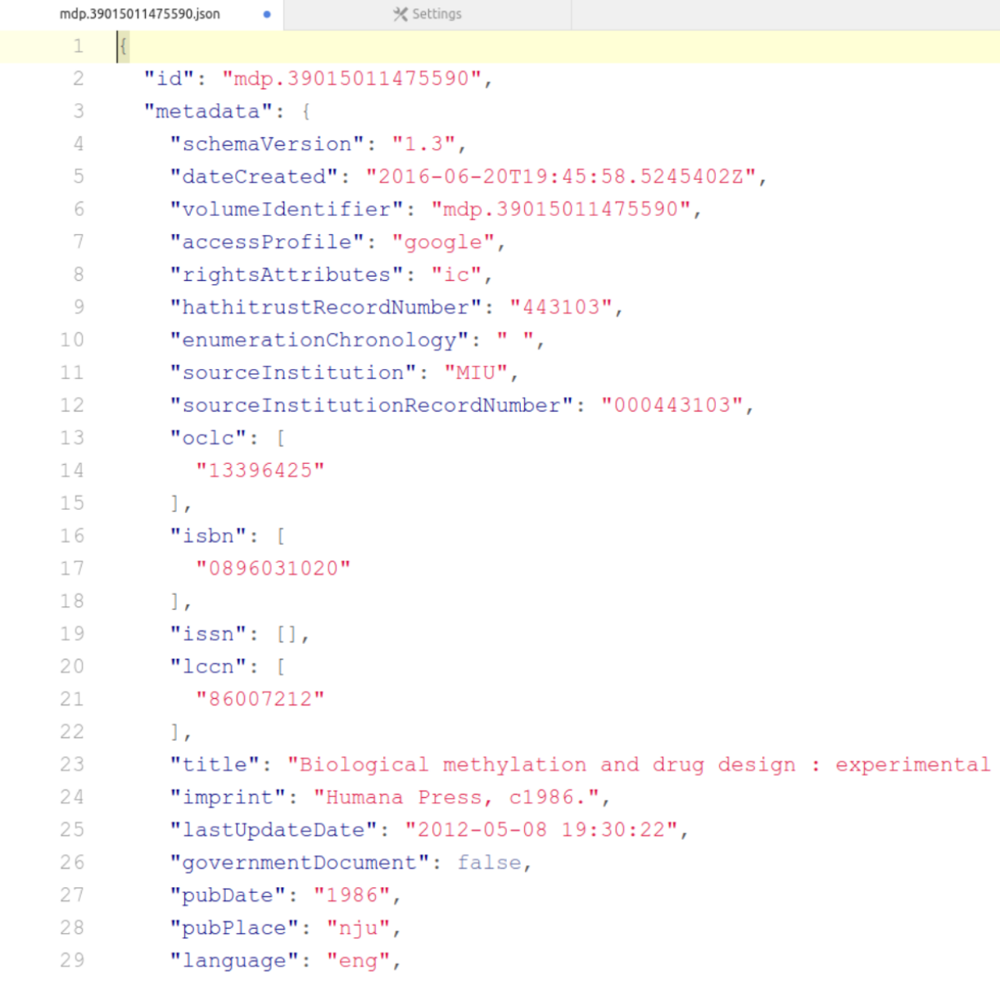</a> <a href="img/htrc1.png">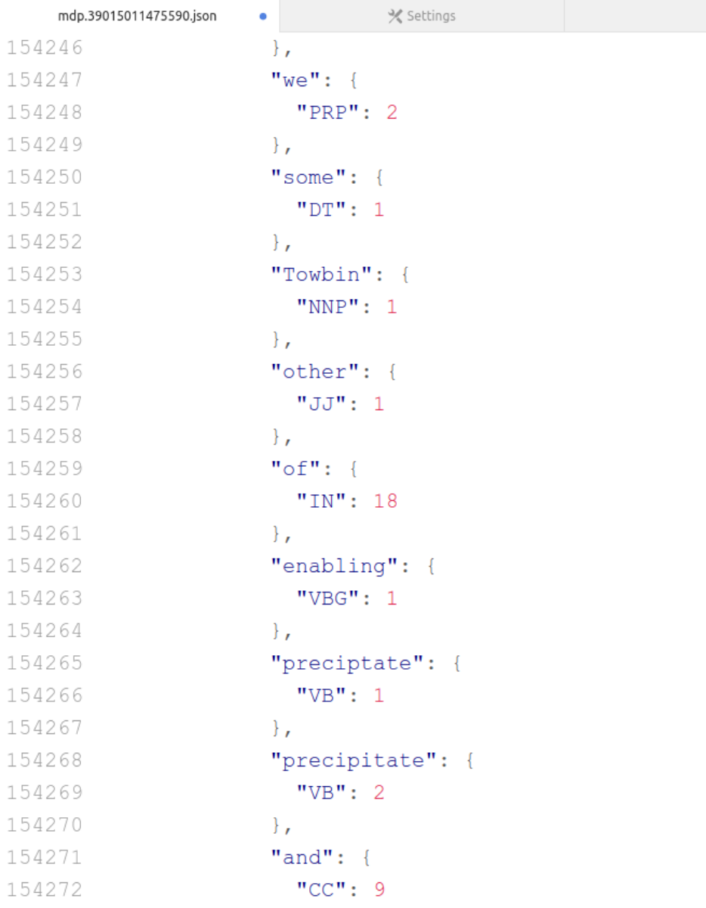</a> --- #### Weitere Anbieter * Leipzig Corpora Collection <!-- .element: class="fragment" data-fragment-index="1" --> * https://wortschatz.uni-leipzig.de/en/download <!-- .element: class="fragment" data-fragment-index="1" --> * 250 Sprachen, je 1 Million Sätze <!-- .element: class="fragment" data-fragment-index="2" --> * zufällige Samples von ganzen Sätzen <!-- .element: class="fragment" data-fragment-index="3" --> * Open Super-large Crawled ALMAnaCH coRpus (OSCAR) <!-- .element: class="fragment" data-fragment-index="4" --> * https://oscar-corpus.com/ <!-- .element: class="fragment" data-fragment-index="4" --> * 160 Sprachen, zwischen 19 Tokens und 250 Billionen Tokens <!-- .element: class="fragment" data-fragment-index="5" --> * randomisierte Reihenfolge der Zeichen <!-- .element: class="fragment" data-fragment-index="6" --> -- ## (3) Abgeleitete Textformate: Prinzip --- ### Definition ><small>"Ausgangspunkt sind Bestände urheberrechtlich geschützter Texte (die Ausgangstexte, im Urheberrecht als 'Ursprungsmaterial' bezeichnet), zu denen eine Institution legalen Zugang hat. Diese Textbestände werden durch die Anwendung von Verarbeitungsroutinen, die einerseits eine gezielte Informationsanreicherung (u.a. durch Annotation), andererseits auch eine gezielte Informationsreduktion (u.a. durch Randomisierung oder Löschung) darstellen, in sogenannte abgeleitete Textformate verwandelt. Diese abgeleiteten Textbestände stehen außerhalb des Anwendungsgebiets des Urheberrechtes."</small> --- #### Modell von Text * Text als gegliederte Zeichensequenz <!-- .element: class="fragment" data-fragment-index="1" --> * Token <!-- .element: class="fragment" data-fragment-index="1" --> * Segment <!-- .element: class="fragment" data-fragment-index="1" --> * Gesamttext <!-- .element: class="fragment" data-fragment-index="1" --> * Tokens als symbolische Elemente <!-- .element: class="fragment" data-fragment-index="2" --> * Wortform <!-- .element: class="fragment" data-fragment-index="2" --> * Lemma <!-- .element: class="fragment" data-fragment-index="2" --> * Wortart <!-- .element: class="fragment" data-fragment-index="2" --> * morpho-syntaktische Funktion <!-- .element: class="fragment" data-fragment-index="2" --> * Bedeutung <!-- .element: class="fragment" data-fragment-index="2" --> * syntaktische Relationen <!-- .element: class="fragment" data-fragment-index="2" --> * Text mit Sequenzinformation <!-- .element: class="fragment" data-fragment-index="3" --> * Position der Tokens im Segment/Text <!-- .element: class="fragment" data-fragment-index="3" --> * Position der Segmente im Text <!-- .element: class="fragment" data-fragment-index="3" --> --- #### Anreichung und Reduktion von Informationen * Gezielte Anreicherung <!-- .element: class="fragment" data-fragment-index="1" --> * Lemma <!-- .element: class="fragment" data-fragment-index="1" --> * Wortart <!-- .element: class="fragment" data-fragment-index="1" --> * Bedeutung <!-- .element: class="fragment" data-fragment-index="1" --> * Segmentierung <!-- .element: class="fragment" data-fragment-index="1" --> * Häufigkeit <!-- .element: class="fragment" data-fragment-index="1" --> * Gezielte Reduktion <!-- .element: class="fragment" data-fragment-index="2" --> * bestimmte Eigenschaften der Tokens <!-- .element: class="fragment" data-fragment-index="2" --> * Sequenzinformation <!-- .element: class="fragment" data-fragment-index="2" --> --- #### Parameter * welche Anreicherung findet statt <!-- .element: class="fragment" data-fragment-index="1" --> * Segmentierung und Segmentlänge <!-- .element: class="fragment" data-fragment-index="1" --> * welche Reduktion findet statt <!-- .element: class="fragment" data-fragment-index="1" --> --- ### Kriterien der DH * Nützlichkeit für eine Reihe einschlägigen Verfahren, u.a.: * Stilometrie * Distinktive Merkmale * Topic Modeling * Sentiment Analyse * Text Re-Use * Netzwerkanalyse --- ### Kriterien der Rechtswissenschaften * Kein Werkgenuss möglich <!-- .element: class="fragment" data-fragment-index="1" --> * Keine Wiedererkennbarkeit möglich <!-- .element: class="fragment" data-fragment-index="2" --> * Keine Rekonstruierbarkeit möglich <!-- .element: class="fragment" data-fragment-index="3" --> -- ## (4) Abgeleitete Textformate: Beispiele --- #### Code und Daten * Textbeispiele (Englisch, Deutsch, Französisch) * Python-Skripte, die Textformate generieren * Beispieldateien für Textformate * Repository: https://github.com/dh-trier/tmr --- #### Textbeispiel *Effi Briest* ><small>In Front des schon seit Kurfürst Georg Wilhelm von der Familie von Briest bewohnten Herrenhauses zu Hohen-Cremmen fiel heller Sonnenschein auf die mittagsstille Dorfstraße, während nach der Park- und Gartenseite hin ein rechtwinklig angebauter Seitenflügel einen breiten Schatten erst auf einen weiß und grün quadrierten Fliesengang und dann über diesen hinaus auf ein großes, in seiner Mitte mit einer Sonnenuhr und an seinem Rande mit Canna indica und Rhabarberstauden besetztes Rondell warf. Einige zwanzig Schritte weiter, in Richtung und Lage genau dem Seitenflügel entsprechend, lief eine ganz in kleinblättrigem Efeu stehende, nur an einer Stelle von einer kleinen weißgestrichenen Eisentür unterbrochene Kirchhofsmauer, hinter der der Hohen-Cremmener Schindelturm mit seinem blitzenden, weil neuerdings erst wieder vergoldeten Wetterhahn aufragte. Fronthaus, Seitenflügel und Kirchhofsmauer bildeten ein einen kleinen Ziergarten umschließendes Hufeisen, an dessen offener Seite man eines Teiches mit Wassersteg und angeketteltem Boot und dicht daneben einer Schaukel gewahr wurde, deren horizontal gelegtes Brett zu Häupten und Füßen an je zwei Stricken hing – die Pfosten der Balkenlage schon etwas schief stehend. Zwischen Teich und Rondell aber und die Schaukel halb versteckend standen ein paar mächtige alte Platanen. <br/>(Theodor Fontane, Effi Briest, 1896)</small> --- #### Einfache Term-Dokument-Matrix * token-basiertes Format <!-- .element: class="fragment" data-fragment-index="1" --> * einzeltext-basiertes Format <!-- .element: class="fragment" data-fragment-index="2" --> * Token kann Wortform oder Lemma sein (= Parameter) <!-- .element: class="fragment" data-fragment-index="3" --> * Tokens sind annotiert (Annotation = Parameter) <!-- .element: class="fragment" data-fragment-index="4" --> * Häufigkeit der Tokens <!-- .element: class="fragment" data-fragment-index="5" --> * keinerlei Sequenzinformation <!-- .element: class="fragment" data-fragment-index="6" --> * eine Datei pro Text <!-- .element: class="fragment" data-fragment-index="7" --> --- #### Einfache Term-Dokument-Matrix 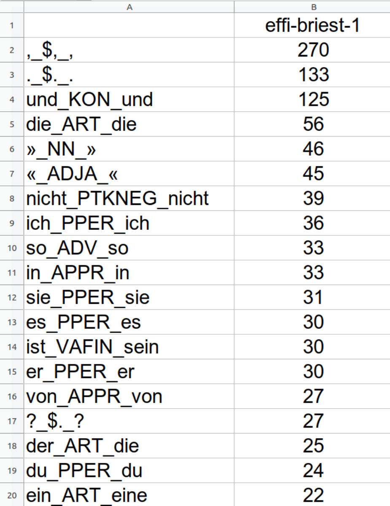</a> --- #### Segmentweise Aufhebung der lokalen Sequenzinformation * token-basiertes Format <!-- .element: class="fragment" data-fragment-index="1" --> * einzeltext-basiertes Format <!-- .element: class="fragment" data-fragment-index="2" --> * Tokens sind annotiert (Annotation = Parameter) <!-- .element: class="fragment" data-fragment-index="3" --> * Text ist segmentiert (Segmentlänge = Parameter) <!-- .element: class="fragment" data-fragment-index="4" --> * Reihenfolge der Tokens innerhalb des Segments ist randomisiert <!-- .element: class="fragment" data-fragment-index="5" --> * Reihenfolge der Segmente im Text bleibt erhalten <!-- .element: class="fragment" data-fragment-index="6" --> * eine Datei pro Text <!-- .element: class="fragment" data-fragment-index="7" --> --- #### Segmentweise Aufhebung der lokalen Sequenzinformation 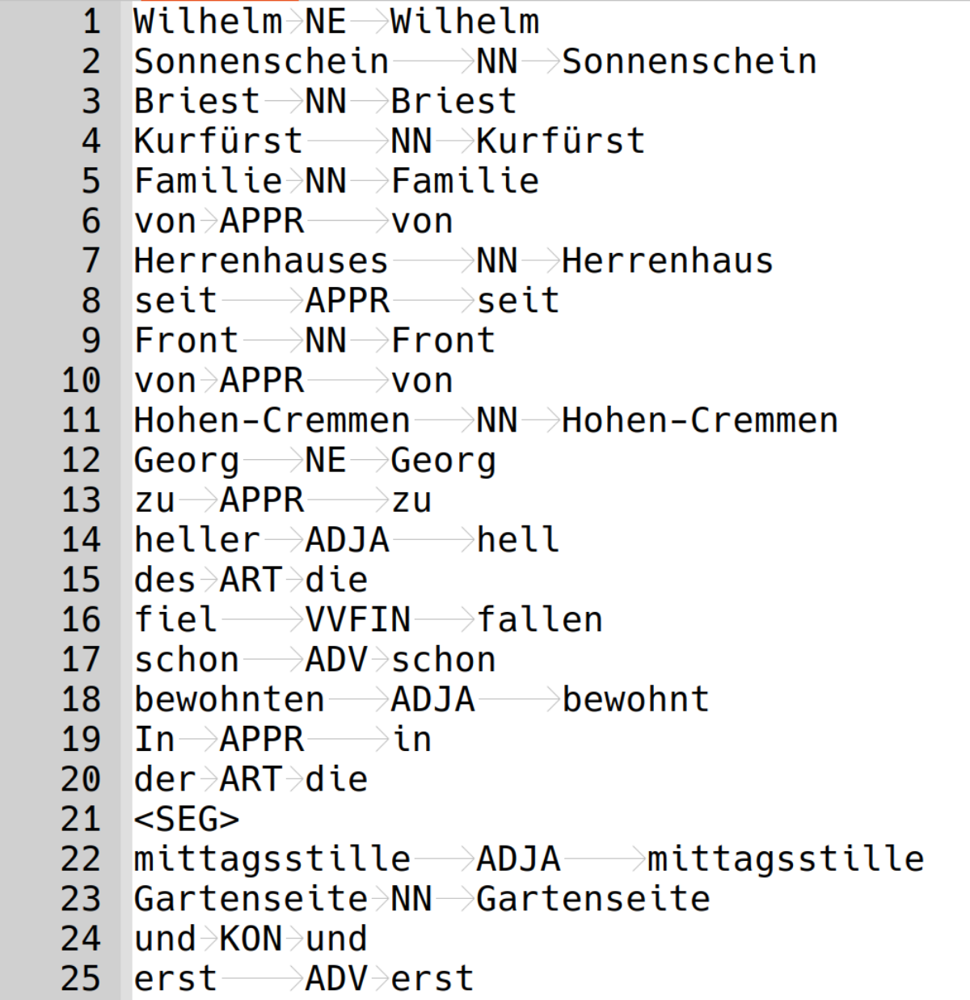</a> https://www.uni-trier.de/index.php?id=73473 --- #### Selektive Reduktion der Token-Information * token-basiertes Format <!-- .element: class="fragment" data-fragment-index="1" --> * einzeltext-basiertes Format <!-- .element: class="fragment" data-fragment-index="2" --> * Tokens werden POS annotiert <!-- .element: class="fragment" data-fragment-index="3" --> * Selektive Ersetzung von Tokens durch POS (= Parameter) <!-- .element: class="fragment" data-fragment-index="4" --> * eine Datei pro Text <!-- .element: class="fragment" data-fragment-index="5" --> --- #### Selektive Reduktion der Token-Information 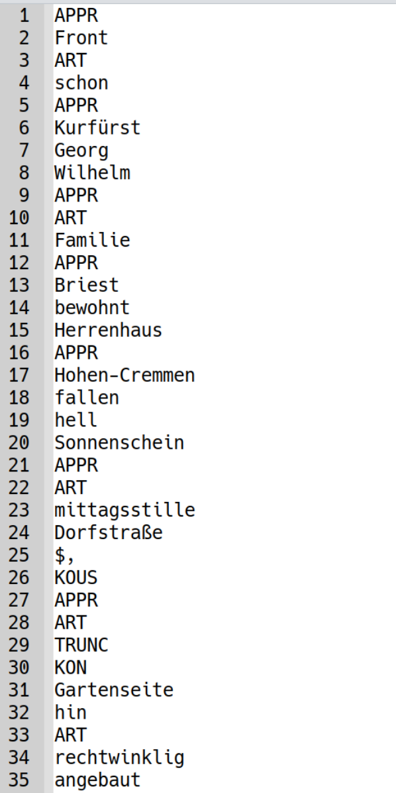</a> --- #### Selektive Reduktion mit Wort-Vektoren * token-basiertes Format <!-- .element: class="fragment" data-fragment-index="1" --> * erfordert Trainingskorpus <!-- .element: class="fragment" data-fragment-index="2" --> * Anreichung: POS, Wordvektor <!-- .element: class="fragment" data-fragment-index="3" --> * Reduktion: Wortform <!-- .element: class="fragment" data-fragment-index="4" --> * eine Datei pro Text <!-- .element: class="fragment" data-fragment-index="5" --> --- #### Selektive Reduktion mit Wort-Vektoren 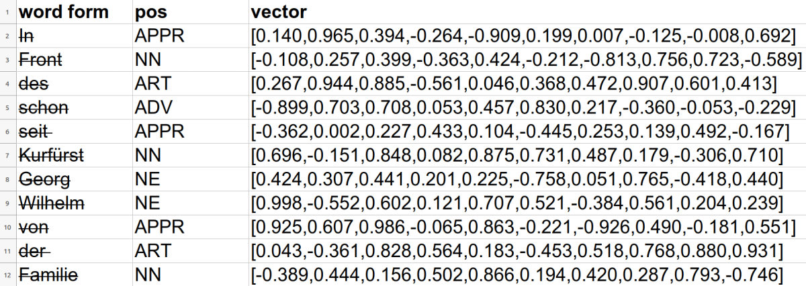</a> --- ### N-Gramm-Häufigkeiten * N-Gramme sind Sequenzen aufeinanderfolgender Tokens <!-- .element: class="fragment" data-fragment-index="1" --> * textübergreifendes Format <!-- .element: class="fragment" data-fragment-index="2" --> * Anreicherung: bspw. POS-Annotation <!-- .element: class="fragment" data-fragment-index="3" --> * Reduktion: seltene N-Gramme; Zuordnung zu Einzeltext <!-- .element: class="fragment" data-fragment-index="4" --> * Häufigkeit über mehrere Texte hinweg <!-- .element: class="fragment" data-fragment-index="5" --> * Aggregation nach Jahr, Textsorte, Varietät, Autor*in, etc. <!-- .element: class="fragment" data-fragment-index="6" --> --- #### N-Gramm-Häufigkeiten 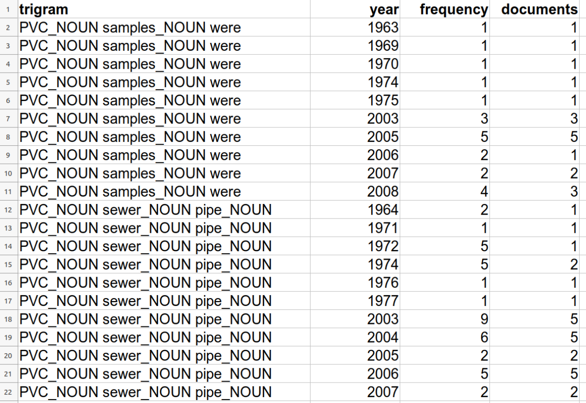</a> * Google Ngrams: Trigramme, Englisch, pro Jahr -- ## Fazit --- #### Überblick 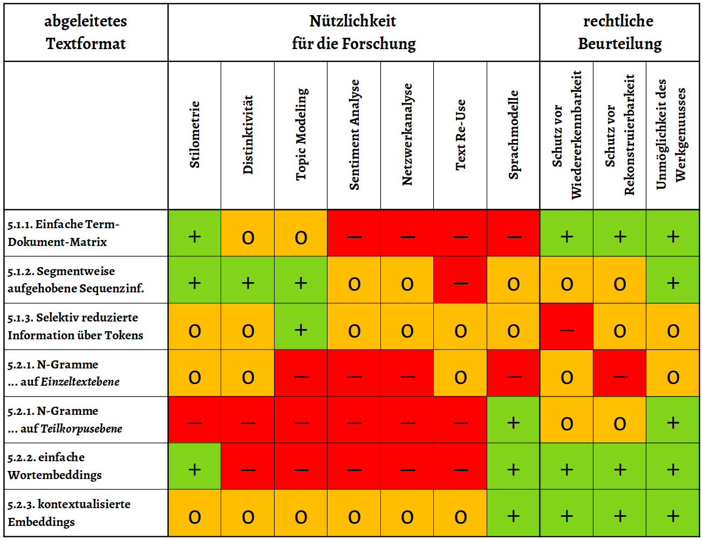</a> --- #### Agenda * Standardisierung der Formate (DH-Community) <!-- .element: class="fragment" data-fragment-index="1" --> * Urheberrechtliche Prüfung der Formate (Rechtswissenschaften) <!-- .element: class="fragment" data-fragment-index="2" --> * Zertifizierung der Erstellungsprozesse (Bibliotheken, Infrastrukturanbieter) <!-- .element: class="fragment" data-fragment-index="3" --> * Publikation von Beipieldatensätzen (DH-Community, Bibliotheken) <!-- .element: class="fragment" data-fragment-index="4" --> * Benchmarking der Formate (DH und Informatik) <!-- .element: class="fragment" data-fragment-index="5" --> --- #### Literatur Christof Schöch, Frédéric Döhl, Achim Rettinger, Evelyn Gius, Peer Trilcke, Peter Leinen, Fotis Jannidis, Maria Hinzmann, Jörg Röpke: "Abgeleitete Textformate: Text und Data Mining mit urheberrechtlich geschützten Textbeständen", in Vorbereitung.